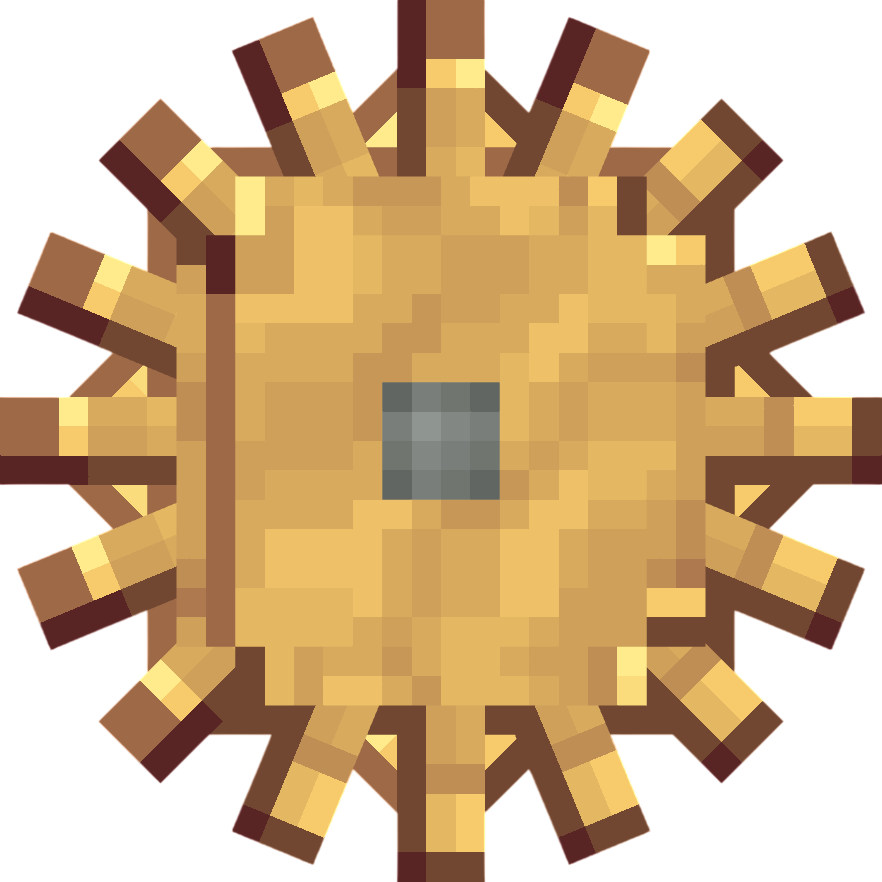
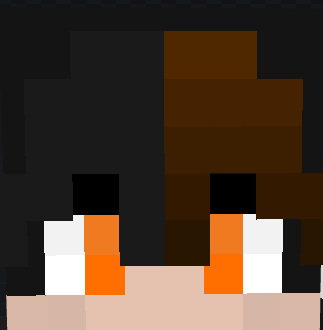
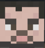
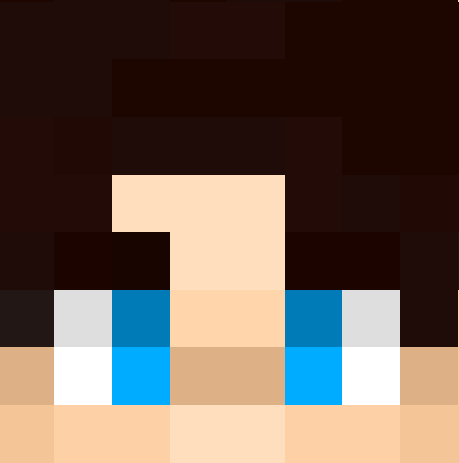

⚙️
ТЕХНІЧНІ РОБОТИ
Наразі ми змащуємо шестерні та калібруємо механізми. Завітайте трохи пізніше!
СТАТУС: ОБСЛУГОВУВАННЯ
← НА ГОЛОВНУ


Займається ігровим процесом, вирішенням конфліктів та підтримкою порядку на сервері

Відповідає за технічну стабільність сервера, розробку сайту та загальний розвиток проекту.

Слідкує за роботою модерації та вирішує складні питання; розробник сайту

Розробник